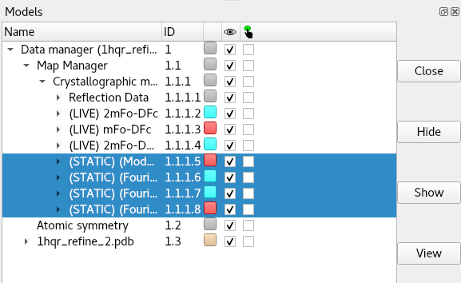

ChimeraX-Clipper Commands¶
The primary purpose of ChimeraX-Clipper is to facilitate the handling of crystallographic maps and symmetry in ChimeraX. However, it’s not restricted to crystallographic data: real-space volumetric maps of any kind may be associated with your model to provide a unified visualisation scheme (see clipper associate). Using Clipper you can open (clipper open) and save (clipper save) structure factors in MTZ format, and explore the detailed fit of you model to maps (see clipper spotlight and clipper isolate). Where applicable, a model initialised for ChimeraX-Clipper will provide a real-time display of crystallographic symmetry-related molecules.
clipper open¶
(NOTE: MTZ files - but not .cif files - may also be opened using the standard ChimeraX open command, with otherwise identical syntax to that described below)
Syntax: clipper open path [structureModel structure] [overSampling number]
Open a structure factor file in .mtz or .cif format, and generate maps for the model specified with structureModel.
If the structure factor file contains pre-calculated amplitudes and phases, they should appear in the file in strict (Amplitudes, Phases, Amplitudes, Phases) order. ChimeraX-Clipper will create one map for each set it finds, and prepend ‘(STATIC)’ to its name. To close any unwanted maps, look in the ChimeraX Models panel under “Data manager”/”Map Manager”/”Crystallographic maps”, select the maps you wish to remove and click “Close”:
Experimentally-measured reflections may be provided as amplitudes (F/sigF), intensities (I/sigI), or their anomalous counterparts (F+/sigF+/F-/sigF- or I+/sigI+/I-/sigI-) and should be stored in the file in these orders. Only one set of experimental data will be used, with intensities preferred. If intensities are provided, they will be internally converted to amplitudes using the analytical French & Wilson method of Read et al.. Anomalous datasets will be merged.
When experimental reflections are found, three live-updating maps will be created (with “(LIVE)” prepended to their names). The first of these is a standard 2mFo-DFc map, while the second is a 2mFo-DFc map with a degree of B-factor sharpening or smoothing applied. The level of sharpening or smoothing depends on the resolution of the data: maps with resolutions worse than 2.5Å will be sharpened, while higher-resolution maps will be smoothed. The sharper of the two maps will be displayed as a transparent surface, the other as a wireframe. Finally, a standard mFo-DFc map will be generated and displayed with contours at ± 3 sigma.
clipper save¶
(NOTE: This command is also available via the top-level ChimeraX “save” command with identical behaviour and syntax)
Syntax: clipper save filename [models] [preserveInput true/false (false)] [saveMapCoeffs true/false (false)]
Save one or more sets of reflection data to (a) MTZ file(s). If more than one dataset is specified by models, they will be saved as a series of files (filename-0.mtz, filename-1.mtz, etc.) numbered in the order they are found in the ChimeraX model tree.
If preserveInput is true, then the original experimental data loaded from file will be saved, with “in.” prepended to the column labels. (IMPORTANT NOTE: if the data was originally loaded from .cif, ONLY the columns selected by Clipper for map calculations will be passed through)
If saveMapCoeffs is true, amplitudes and phases for Clipper’s current Fc, 2Fo-Fc and Fo-Fc maps will be saved.
Free flags and the Fobs/SigFobs arrays used by Clipper will always be saved.
clipper associate¶
Syntax: clipper associate volumes [toModel structure]
Have ChimeraX-Clipper take control of the chosen volumes and associate them with the given model.
In order to work with ChimeraX-Clipper’s visualisation modes, a volumetric map (such as a cryo-EM map) must first be associated with an atomic model using this command.
clipper spotlight¶
Syntax: clipper spotlight [structures] [radius number]
Initiate “spotlight mode” (a sphere of visible atoms and density following the centre of rotation) for the given models, and optionally set the radius of the sphere. If structures is not specified, the command will only apply to models which are already initialised into the ChimeraX-Clipper data structure.
clipper isolate¶
Syntax: clipper isolate atoms [surroundDistance number (0.0)] [contextDistance number (5.0)] [maskRadius number (3.0)] [hideSurrounds true/false (true)] [focus true/false (false)] [includeSymmetry true/false (true)]
Visually isolate the selected atoms from their surroundings, and mask all associated maps to cover the immediate vicinity. The algorithm for deciding the final view is as follows:
The atoms selection is expanded to complete residues.
All residues with any atoms within surroundDistance of any atoms in the results from (1) are added to the selection. If includeSymmetry is true, symmetry atoms within the surroundDistance will also be included. The final selection at this stage will be covered by the map(s).
(This step only has an effect if hideSurrounds is true) All residues with any atoms within contextDistance of the results from (2) will be displayed, but not covered by the map(s). If includeSymmetry is true, symmetry atoms will be included.
All maps associated with the model are masked down to within maskRadius of the atoms specified in (2).
If hideSurrounds is true, all atoms not found in (1) or (2) will be hidden. Cartoon display will not be affected.
If focus is true, the view will be reset to centre on and encompass the covered region.